Playing iRogue
not entirely updated for 1.0.0, but it doesn't matter much.
not entirely updated for 1.0.0, but it doesn't matter much.
Hopefully you're familiar with rogue (or rogue-like games) already. They are text-based games which have a familiar premise --- wander around in a dungeon, collect treasure, beat up bad-tempered critters, try to finish a quest.
![[welcome screen]](../images/iRogue/1welcome.gif)
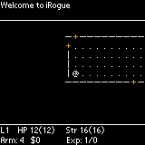
When you start the application you will see a screen split into three parts. The top part will display messages (e.g. "you hit", "the ice monster misses"). The middle part represents a part of the level you're on. The bottom part contains your status line.
(Fairly self-explanatory. The message window is cleared when you move; if there are multiple messages in one turn, they will "scroll" upward and off the screen. There is a menu item to show the last ten messages in case you miss something.)
The idea is that you're wandering around in a dungeon. You are represented by an at-sign "@". You are probably going to start out in a room. Whichever room you are in at the moment is lighted, and other rooms are dark; you can see what's in your current room, but not in the other rooms. The lighted tiles appear as ".". The walls of the room are made of dashes "-" and "|". There is, hopefully, at least one doorway "+" which leads into a passage "#" which leads to some other room.
(Are you with me so far?) You may see some other things in the room you're in, such as "%" stairs. You can go down the stairs; you can't go up until you have achieved your goal.
Other things you might see include scrolls "?" you can read, potions "!" you can quaff, food "o" you can eat, weapons ")" you can wield or throw, rings "=" you can put on or remove, armor "]" you can wear or take off, and staffs "/" you can zap. These are all objects you can pick up and put in your pack (this will be done automatically when you walk over them, so long as your pack is not full.)
Your goal is to find the Amulet of Yendor, which is represented by a comma ",". You will not encounter it until you go down at least twenty-odd levels.
From time to time you may run into a trap "^". There are various kinds of traps, but I'll let you find out about them on your own. You can find traps (and hidden doors) by searching and generally being lucky, or unlucky as the case may be.
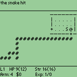
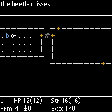
There are also monsters, represented by the letters A to Z and a to z. Some may be asleep or unaware of your presence. When awake and aware of you, they are mostly pretty crabby and will probably try to kill you.
Your secondary goals are to get experience by killing monsters (which will make you tougher to kill), and get money "*" (which will give you a higher score when you die or win.)
L1: This is the level of the dungeon you're currently on - how far you are from the surface. You start on 1 and can go down as far as 99 (obviously you don't need to go that far, since the Amulet starts appearing much earlier.)
HP 12(12): Your current and maximum hit points - how far you are from being dead. Your maximum hit points will go up as you advance in experience. Your current hit points will, you hope, stay above 0.
Str 16(16): Your current and maximum strength - how hard you hit. You may find a way to raise your maximum strength. You may find things that reduce your current strength, and things that restore it.
To the right of the Strength display, you may sometimes see a word such as "hungry". This should suggest to you that it is time to eat some food. If you ignore this for too long, you will start fainting, and that is uncool when there are monsters around to stomp on you.
Arm: 4: This is your armor rating - how hard you are to hit. Higher is better, as you will see if you take off your currently worn armor (you do that via the inventory screen.)
$0: This is how much money you have. (It's not good for anything except the top-ten list of dead rogues, unlike some other rogue-like games in which you can use it to purchase items in stores.)
Exp: 1/0: This is your current experience. The first number is your experience level (I blame D&D for overloading the word "level".) The second number is your experience points (somehow that seems grammatically wrong.)
First, imagine that the screen is a compass. At the top of the screen is north. Imagine that this compass is divided like a pie into eight slices: N, NE, E, SE, S, SW, W, NW. The slices meet in the center of the screen. Tap within a slice, and that is the direction you will move in.
If the rogue-relative preference is on, the pie is always centered around your @. If this preference is off, the pie stays in a fixed position -- regardless of where you (@) are located on the screen. The rest of this section assumes a fixed-position pie.
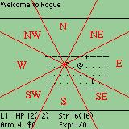
Ok. You got the pie? I am going to complicate it now. If you tap very close to the center of the screen, instead of moving you will "search" at your current location. (Every time you search, you have some probability of finding hidden traps and secret doors in the eight tiles immediately adjacent to you.) Moving outward... If you tap moderately close to the center of the screen, you will move one square at a time. If you tap far from the center of the screen (near the edge of the screen), you will move several squares -- you move until you are adjacent to something "interesting" (such as an object, door, wall, stairs, or monster.)
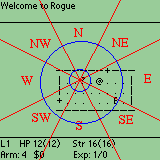
So there's a pie of what-direction-you-move, and there are some concentric circles of what-happens-when-you-tap. You can adjust the size of these circles via the Preferences menu item on the Options menu, depending on what you think is deserving of more screen real-estate.
Oh, yeah: to attack a monster "hand-to-hand", with whatever weapon you're currently wielding, you just try to move onto its square. If it is immediately to your west, tap on the west side of the screen, etc., and you should see a message such as "you hit".
If you have a keyboard, you can also use the classic "hjklyubn" keys for movement. To move several squares at a time (as when you tap near the edge of the screen) use the shift key.. "HJKLYUBN".
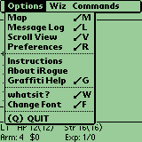
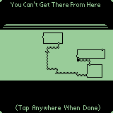
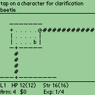
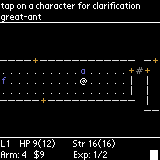
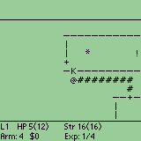
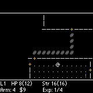
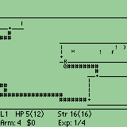
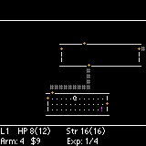
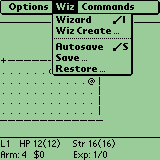
If you are a purist, you will not want to use this menu. If you find the game frustratingly hard, this menu is for you.
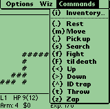
The following menu items can be accessed faster by writing the graffiti character that appears in parentheses.
When you move around, you tend to pick up things (by walking on them.) Where do they go? Your pack. How do you do something with them?
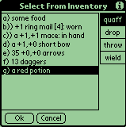
To do something to an item in your inventory, select "Inventory" from the Commands menu (or write "i", lower-case I.) A window will pop up with a list of your inventory. Select any item. This should cause three or four buttons to appear on the right. The top one is what iRogue guesses you're most likely to want to do to that item, and it is selected by default. If you'd rather do something else to the item, select another button. Then tap "OK" to perform the action, or "Cancel" if you've changed your mind.
As I mentioned above, there is a Preferences item on the Options menu which will allow you to set various things, including the size of those "what am I doing when I tap somewhere" circles.
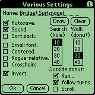
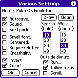
When you have changed the numbers, you can hit the "Draw" button to display the three areas. It will draw the middle region in black. (The "Clear" button will redraw the preferences screen without the big black donut.)
The preferences screen also allows you to:
Your preferences will be remembered "forever", with the exception of the name, which belongs to a particular rogue and will revert to the default when that rogue dies (or, if you have "save" turned off, when you leave iRogue and that rogue isn't saved.)
This is where you can rebind the hardware buttons, if you so desire. By default, they are not rebound:
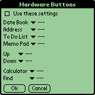
To get here, go to the Preferences screen and tap the "Buttons..." button. When you tap "ok" here, you will go back to the Preferences screen (you must tap "ok" there too, assuming that you haven't suddenly changed your mind.)
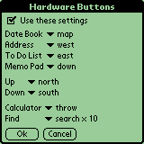
You have the option of rebinding the four application buttons, the up/down scroll buttons, and the silkscreened calculator and find buttons. You can rebind some, all, or none. Once you have made some choices, check the "use these settings" box to turn it on. (If you ever want to turn the rebinding off temporarily, all you have to do is uncheck the box. iRogue will remember your settings but won't use them.) There's an example above in case you're not feeling very creative.
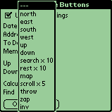
You have a fixed set of choices for each button: n/e/s/w movement, up/down movement, resting for 10 turns, searching for 10 turns, bringing up the map of the level, scrolling the screen by 5 squares, and bringing up the 'throw', 'zap', or 'inventory' dialogs. (The dashed choice you see at the top is "don't rebind this button", i.e. let the button do whatever it ordinarily would.) Let me know if there is some function you desperately want that does not appear as a choice.
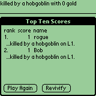
When you reach the top-ten screen, non-purists have the option of "revivifying" a dead character. The character can take a penalty for restoring and come back as a living rogue (who will again appear on the top-ten list next time you die)... or the character can return as undead (and, like a wizard, will not appear on the top-ten list again). I like hunting leeches while undead.
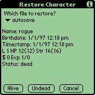
Want "spoilers" for iRogue?
Consult Sterling Babcock's iRogue Keyguide.
what a trippy feeling